Par Motor › Historia del motor › Porsche
Historia del motorPorsche: la historia completa

Este es el Porsche Taycan. Cien por cien eléctrico.
Cuando salió, mucha gente dijo que eso ya no era un Porsche.
Lo curioso es que el primer coche que diseñó Ferdinand Porsche, hace más de ciento veinte años… también era eléctrico.
Entre aquel coche y este hay carreras, un coche del pueblo, tanques de guerra, una cárcel en Francia y una casi bancarrota…
…y el deportivo más famoso del mundo.
Esta es la historia de Porsche: de los tanques al Taycan. Por cierto, cada imagen del vídeo lleva su fuente en la esquina.
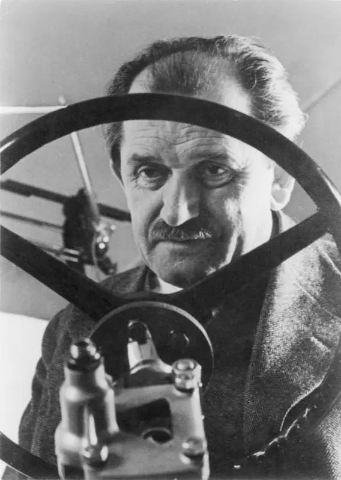
Ferdinand Porsche (1875-1951)
Ferdinand Porsche nace en 1875 en Maffersdorf, en Bohemia, la actual República Checa.
Es hijo de un hojalatero y nunca termina una carrera universitaria. Pero tiene una obsesión: la electricidad.
De adolescente instala luz eléctrica en la casa familiar, algo casi de ciencia ficción en su pueblo.
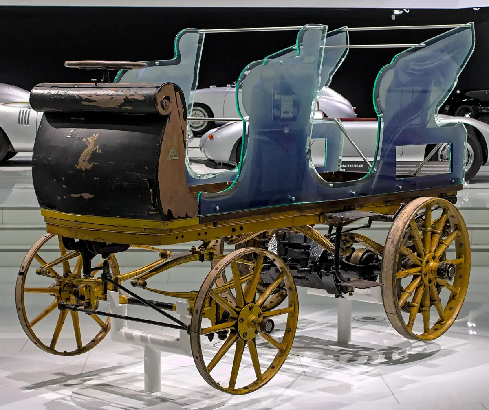
En 1900, con veinticuatro años, presenta en la Exposición Universal de París el Lohner-Porsche.
Un coche eléctrico con los motores dentro de las propias ruedas.
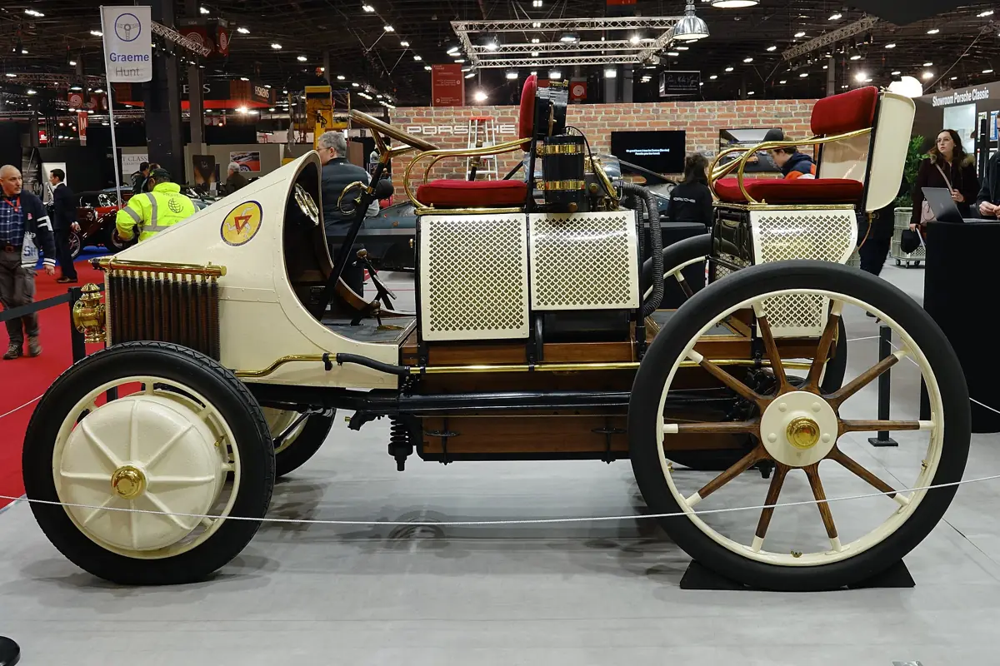
Poco después crea otra versión en la que un motor de gasolina genera electricidad para esos motores. Uno de los primeros híbridos de la historia.
Su talento lo lleva a ser director técnico de Austro-Daimler y después de Daimler, en Stuttgart, donde trabaja en coches como el Mercedes-Benz SSK.
En 1931 funda en Stuttgart su propia oficina de diseño. Ojo: todavía no fabrica coches. Los diseña para otros.
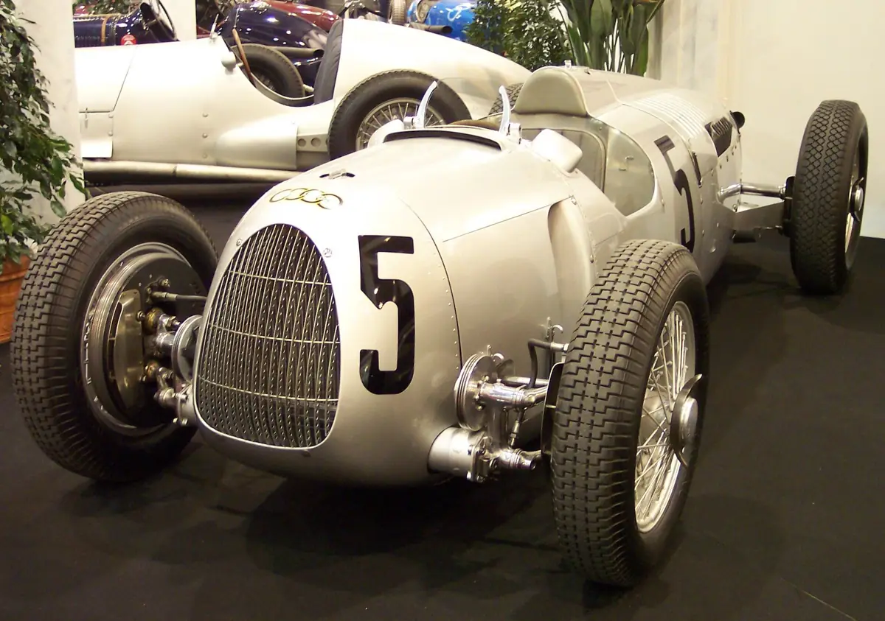
Por ejemplo, los Auto Union de carreras de los años treinta, unas de las famosas Flechas de Plata.
1934
En 1934 llega el encargo que lo cambia todo. El régimen nazi quiere un 'coche del pueblo': barato, para cuatro personas y capaz de circular por las nuevas autopistas.

Porsche lo diseña. Es el coche que el mundo conocerá como Volkswagen Escarabajo.

Miles de alemanes empiezan a pagarlo por adelantado con una cartilla de sellos de ahorro. Pero casi ninguno lo recibirá.

En 1939 estalla la Segunda Guerra Mundial. La fábrica deja de pensar en civiles y, con la misma mecánica, nacen vehículos militares como el Kübelwagen…
…o el Schwimmwagen, un coche anfibio.
Y aquí hay que contar la parte oscura.
En la fábrica de Volkswagen, y también en Porsche, se utilizaron trabajadores forzados: prisioneros de guerra y personas deportadas desde otros países.
Hoy ambas empresas lo reconocen públicamente. No se puede contar esta historia sin ello.
Tiger (p)
Durante la guerra, Ferdinand Porsche también diseña tanques. Y otra vez aparece su vieja obsesión: la electricidad.
Para el concurso del tanque Tiger propone un sistema en el que los motores de gasolina no mueven las orugas: generan electricidad para unos motores eléctricos.
¿Te suena? Es la misma idea que su híbrido de 1900.
Pero el sistema era complicado, daba averías y necesitaba mucho cobre, un material escaso en plena guerra.
El ejército elige el diseño de la empresa rival, Henschel.
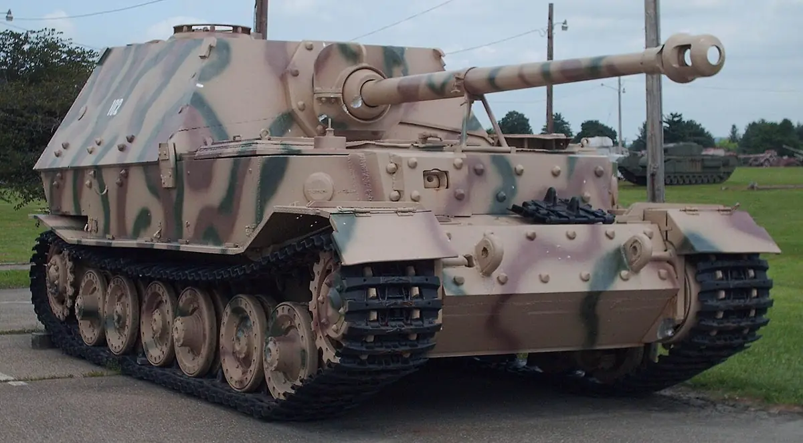
Porsche ya había fabricado decenas de chasis, así que no se desperdiciaron: se convirtieron en un cazacarros que llevaba su nombre, el 'Ferdinand', rebautizado después como 'Elefant'.
Se estrenó en la batalla de Kursk, en 1943, con más problemas mecánicos que éxitos.
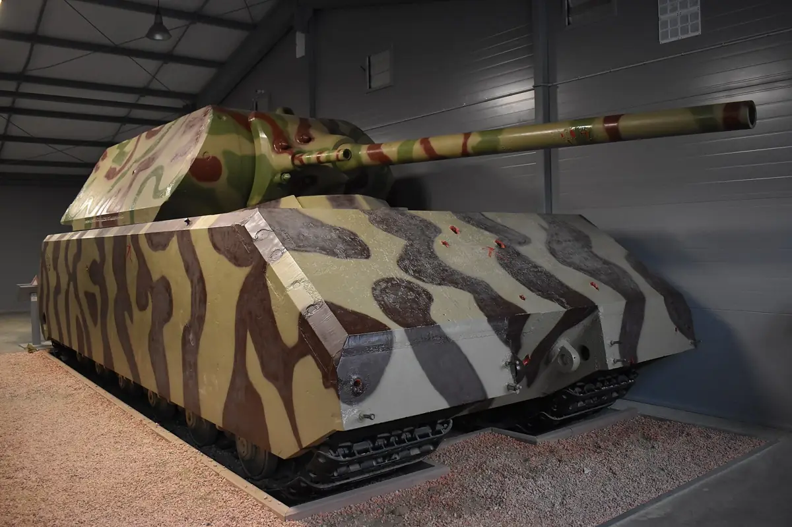
Y luego está el Maus, 'ratón' en alemán. El tanque más pesado jamás construido: unas ciento ochenta y ocho toneladas.
Era tan pesado que muchos puentes no lo habrían soportado. Solo se llegaron a fabricar prototipos.
El nombre, por supuesto, era una ironía.
1945
La guerra termina en 1945 y la familia Porsche lo pierde prácticamente todo.
A finales de ese año, Ferdinand es detenido en Francia. Pasará cerca de dos años en prisión.
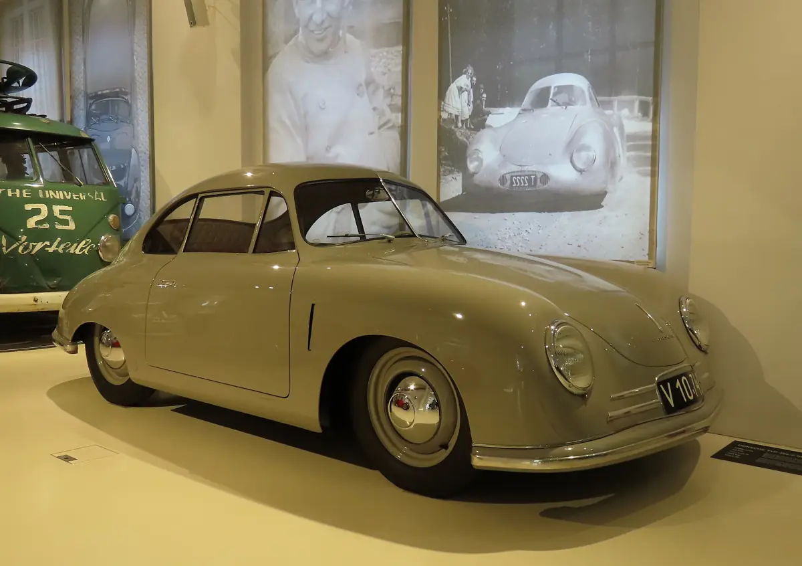
Mientras tanto, su hijo Ferry y su hija Louise mantienen viva la empresa en Gmünd, un pequeño pueblo de Austria, dentro de un antiguo aserradero.
Reparan coches, tractores… lo que haga falta para sobrevivir.
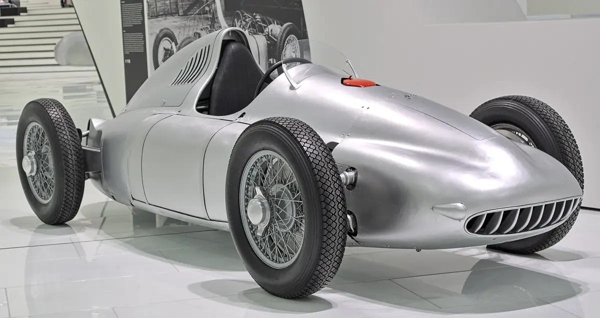
Un encargo de la marca italiana Cisitalia, un coche de Gran Premio, aporta el dinero que ayuda a pagar la fianza de Ferdinand.
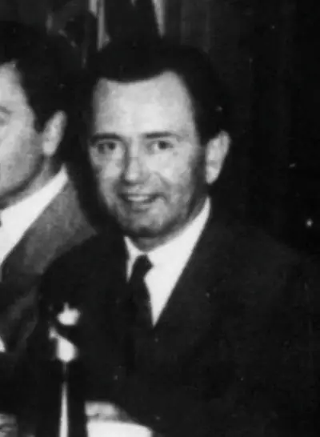
Y entonces Ferry hace algo que su padre nunca había hecho: un coche con el apellido de la familia. No encuentra el deportivo de sus sueños, así que decide construirlo.
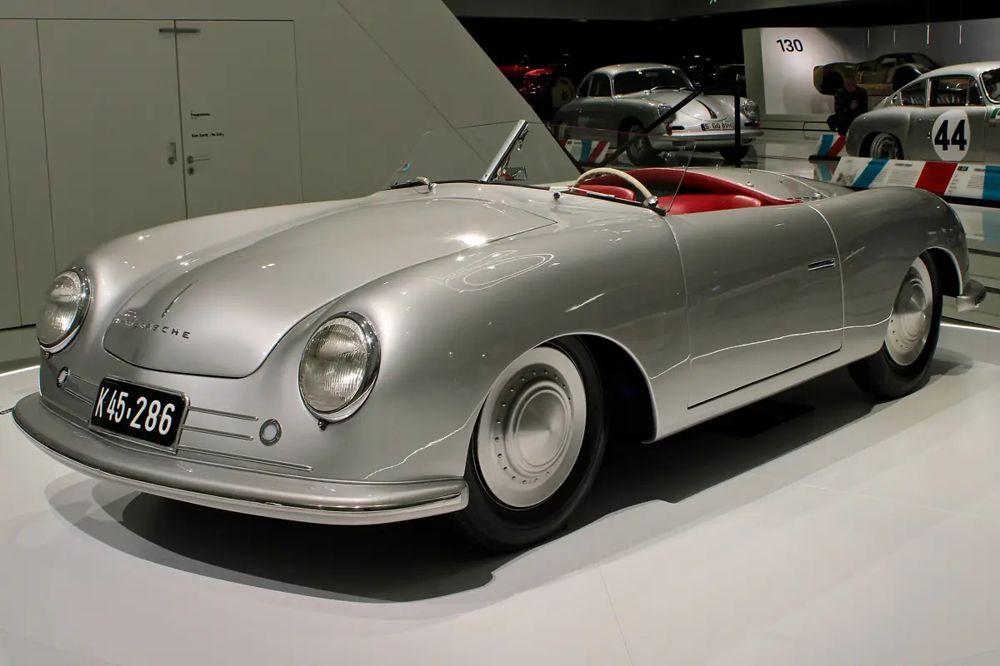
En 1948 nace el Porsche 356 'Número 1'. Motor trasero, piezas del Escarabajo y muy poco peso.
Ferdinand llegó a verlo. Murió en 1951, tras ver nacer la marca con su nombre.
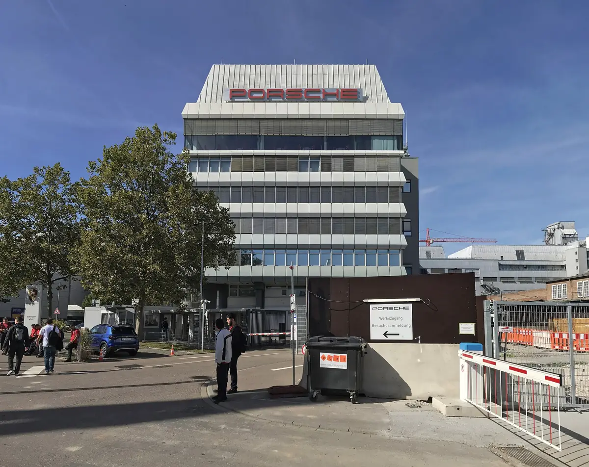
La empresa regresa a Stuttgart, al barrio de Zuffenhausen. Donde sigue hoy.
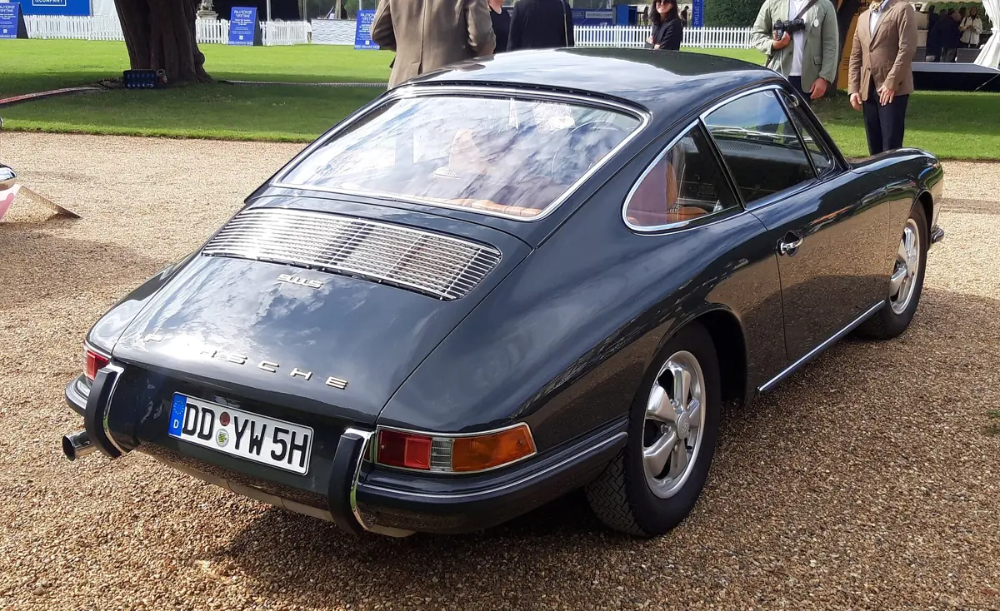
Porsche 911 · 1966
En 1963 Porsche presenta en Frankfurt al sustituto del 356. Su nombre: 901.
Pero Peugeot tenía registrados en Francia los nombres de tres cifras con un cero en medio. Así que el cero se convirtió en un uno.
Lo diseña el nieto del fundador, Ferdinand Alexander 'Butzi' Porsche.
Seis cilindros bóxer detrás y una silueta que, más de sesenta años después, sigue siendo reconocible al instante.
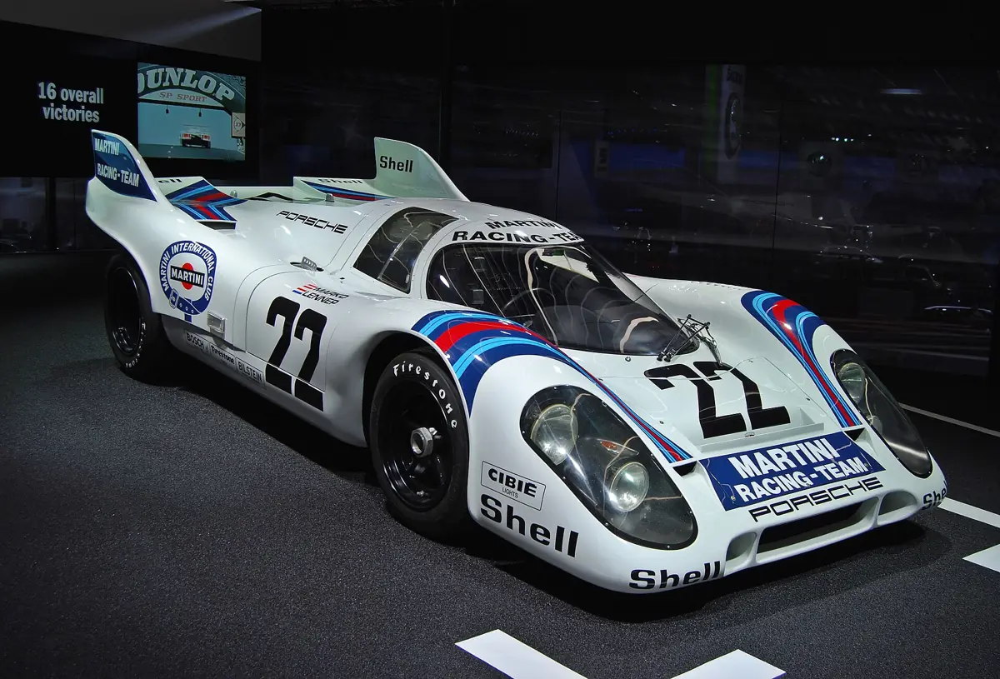
Porsche quiere demostrar lo que vale en la pista, y su gran objetivo son las 24 Horas de Le Mans. En 1970, por fin, gana en la general con el 917.
Desde entonces se ha convertido en la marca con más victorias absolutas en Le Mans.
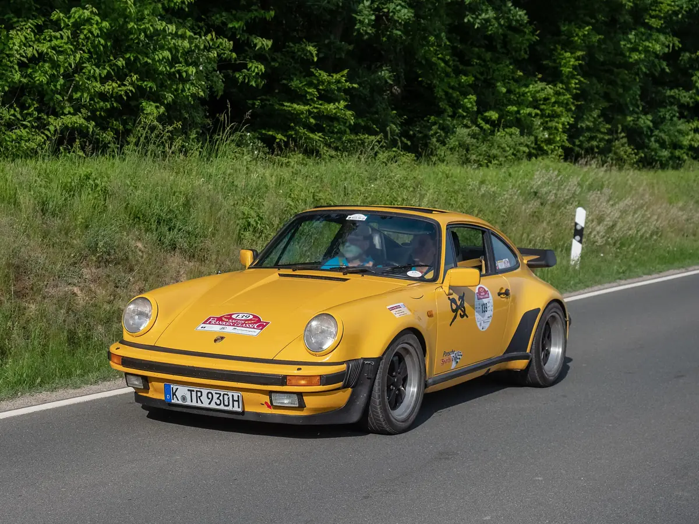
En los setenta llega el 911 Turbo…
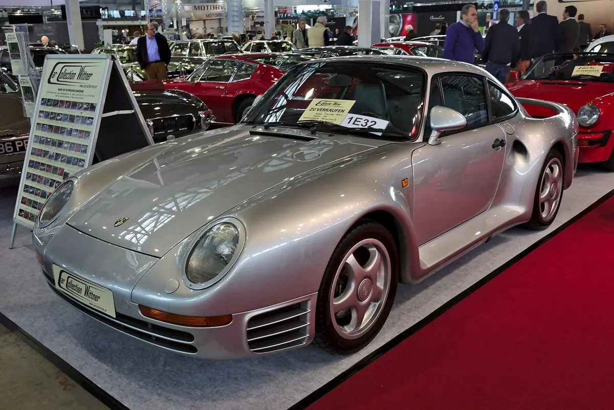
…y en los ochenta el 959, un superdeportivo con tracción total que parecía venir del futuro.
Todo parecía perfecto. Hasta que dejó de serlo.
Ventas en caída libre
A principios de los noventa, Porsche está en serios problemas. Sus coches son caros de fabricar, la gama se ha quedado anticuada y las ventas se hunden.
Se llegó a especular con que alguien compraría la marca.
En 1993 llega a la dirección Wendelin Wiedeking. Reorganiza las fábricas inspirándose en los métodos de producción japoneses y apuesta por dos coches.
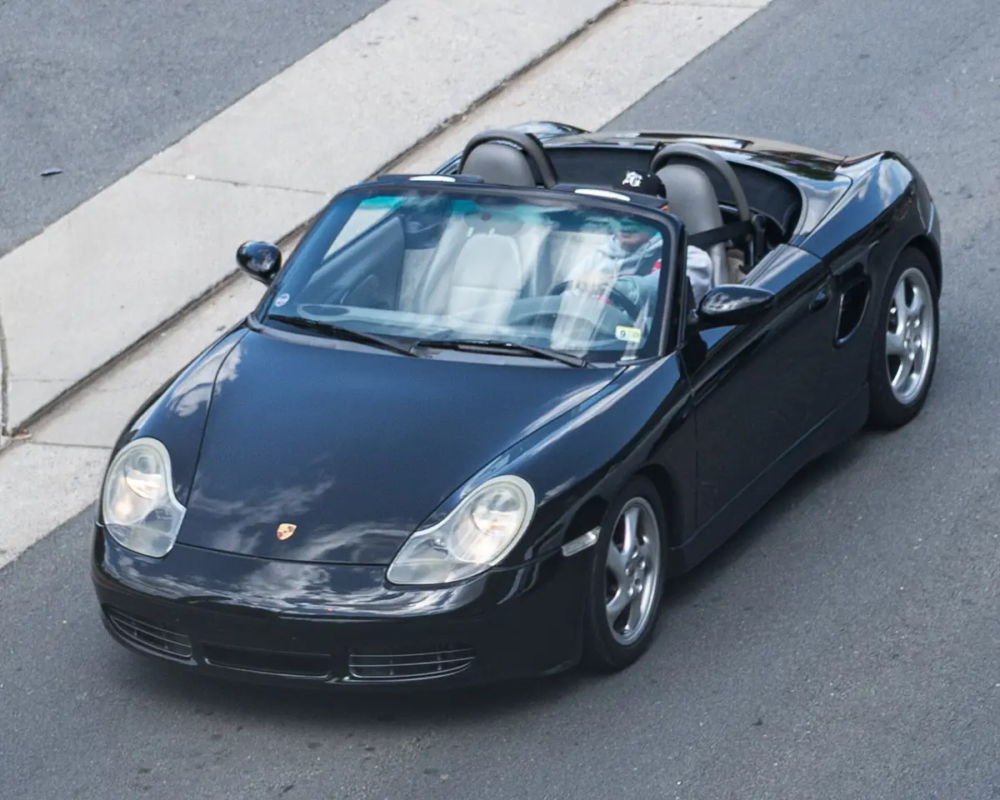
El primero, el Boxster, en 1996. Un Porsche más asequible que comparte muchas piezas con el nuevo 911.
El segundo, el más polémico: el Cayenne, en 2002. ¿Un Porsche todoterreno?
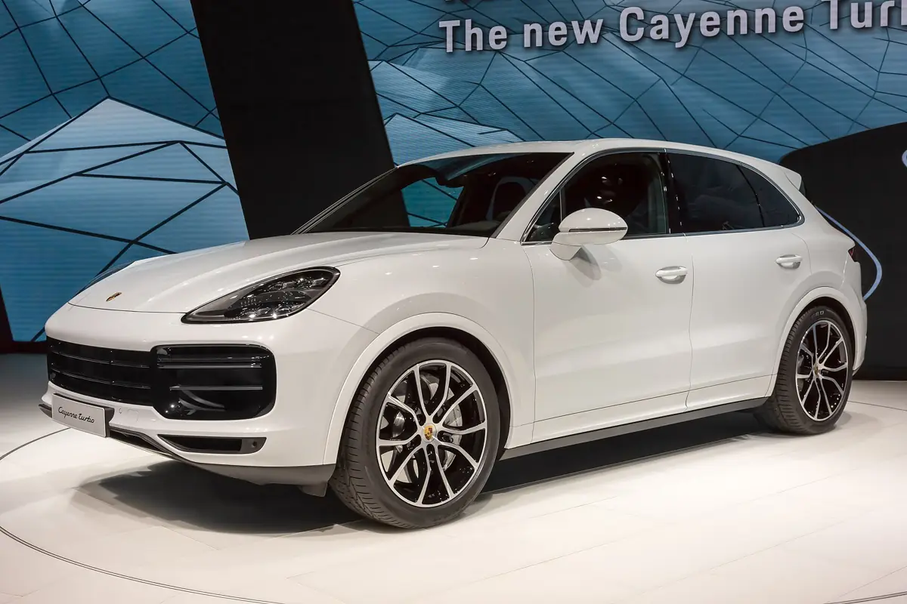
Los puristas se escandalizaron… y el Cayenne se convirtió en uno de los Porsche más vendidos. Su dinero financió los deportivos que esos mismos puristas adoran.
Y llega otro giro de guion. Hacia 2008, Porsche intenta hacerse con el control de Volkswagen… y termina siendo al revés.
Hoy Porsche forma parte del Grupo Volkswagen. La empresa que diseñó el Escarabajo acabó dentro de la familia del Escarabajo.
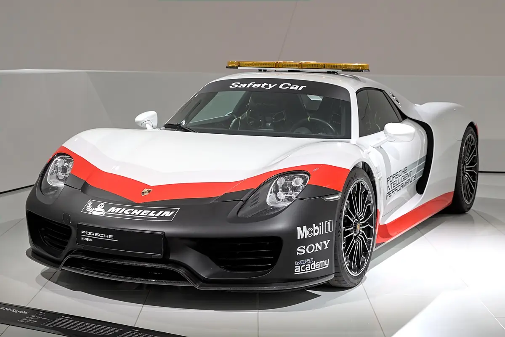
Porsche 918 Spyder
En la década de 2010, Porsche vuelve a mirar a la electricidad. Primero con el 918 Spyder, un superdeportivo híbrido.
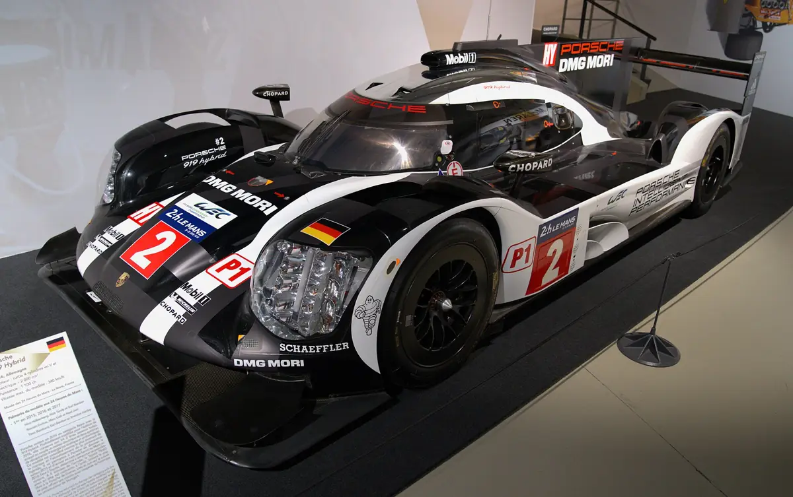
Después con el 919 Hybrid, que gana Le Mans tres años seguidos, de 2015 a 2017.
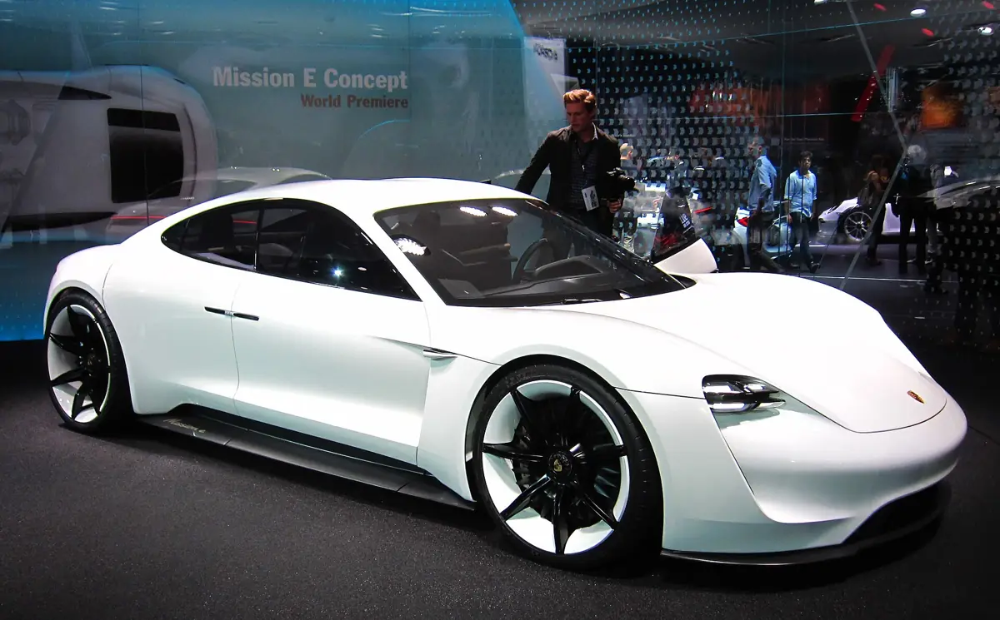
En 2015 enseña un prototipo eléctrico, el Mission E.
Y en 2019 lo convierte en realidad: el Taycan, su primer deportivo cien por cien eléctrico.
Usa una arquitectura de 800 voltios para cargar más rápido. Y su nombre viene a significar algo así como 'joven caballo lleno de energía', como el caballo de su escudo.
Y aquí se cierra el círculo. Un coche eléctrico en 1900. Un tanque con propulsión eléctrica en la guerra. Un híbrido ganando Le Mans. Y un deportivo eléctrico de serie en 2019.
La idea que obsesionaba a Ferdinand Porsche tardó más de un siglo en encontrar la tecnología que necesitaba.
El primer porsche ya era eléctrico
Así que la próxima vez que alguien diga que un Porsche eléctrico no es un Porsche de verdad… recuerda que el primero que diseñó Ferdinand ya lo era.
La semana pasada, Ferrari.
Más curiosidades de Porsche
¿Cuánto vale hoy un Porsche?
Consulta el precio justo de segunda mano de cualquier modelo, año por año, con el tasador gratis de Par Motor.
Ver precios por modelo →